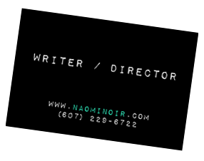

Monster Draw is a fun, simple drawing app for PC/Mac and Android, that was developed over the course of a week in a collaboration with William LaMorie. The application was coded in Processing 2.0 and all GUI elements were lovingly drawn by me! Free to download, or free to play with online, Monster Draw in its basic form is slated to make it's Google App Store debut in early 2015 as a free creative toy for anyone to use. Future developments hope to include camera use on mobile devices, refined file saving, and QR scan capacity.
Naomi is a Screenwriter, Director, and freelance graphic designer based in upstate NY.
Clips and scripts from the feature film Bad Faith, as well as cast and crew bios.
A sampling of original graphic elements created for logos, posters, brochures, mailings, etc.
Find out More
